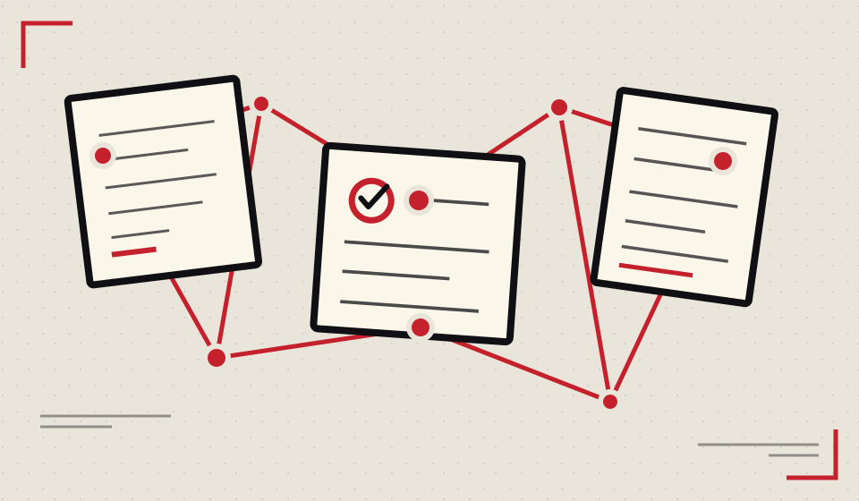

Savoir et comprendre
Histoire, notions, sciences et idées.
WIKI DES COMMUNS · VERSION EXPÉRIMENTALE
Un wiki complémentaire de Wikipédia, et non son substitut. Nous relions les connaissances générales aux pratiques, expériences et ressources collectives, sans recopier inutilement ce qui existe déjà.
Relier sans simplifier
Le Wiki rapproche des documents, des savoir-faire et des expériences, tout en gardant la place du doute et de la contradiction.
Découvrir notre méthode
Wikipédia n'est ni une vérité automatique ni une référence intouchable. Ses articles sont utiles pour commencer une recherche, puis leurs sources, leurs versions et leurs angles morts doivent être examinés. Une institution, une étude, un témoignage ou une tradition orale ne sont pas non plus crédibles par leur seul nom : on confronte méthodes, contextes et preuves.
Interstice ne remplace pas Wikipédia. Il relie des savoirs existants, ouvre des perspectives parfois marginalisées et documente des pratiques, sans substituer un dogme à un autre. Lire la méthode de vérification et de décentrement.
Rechercher un sujet pour consulter une introduction issue de Wikipédia et accéder à l'article d'origine. Ce résumé est produit par Wikipédia, non vérifié par Interstice : il peut être incomplet, contesté ou erroné ; consulter les sources et l'historique. Les contenus appartiennent à leurs auteurs et autrices ; la licence et l'historique sont accessibles sur Wikipédia.
Histoire, notions, sciences et idées.
Tutoriels, recettes, techniques et plans.
Choisir des outils numériques libres (fiche en préparation)Vie associative, décisions et organisation collective.
Créer une association collégiale
Décider ensemble
Accueillir et gérer les conflits (fiche en préparation)
Initiatives collectives et retours de terrain.
Squats et lieux autonomesParcours, courants de pensée et collectifs.
Livres, archives, outils et bibliothèques.
Monter une bibliothèque collective (fiche en préparation)Voir aussi : mutualiser du matériel entre collectifs (fiche en préparation)
Une carte interactive des notions : identités, orientations, discriminations et écriture inclusive.
Histoire des mouvements antifascistes, mécanismes politiques et sociaux et réponses civiques documentées.
Comprendre le racisme et ses formes, les mémoires, les discriminations et les recours avec des sources documentées.
Confronter les auteurs, les contradictions et les expériences plutôt que collectionner des citations. Premières fiches critiques, sourcées et ouvertes à la révision.
Qui fait vivre les communs ? Federici, Kropotkine, bell hooks et Freire
Une liste permanente des notions à approfondir, des sources à vérifier et des travaux en cours. Elle est maintenue dans le dépôt afin de ne pas perdre les tâches entre deux sessions.
Courants féministes, luttes historiques, travail et salaires, violences et droits, féminismes intersectionnels et pratiques collectives.
Un grand dossier sur les structures de pouvoir, l’histoire, le travail, les corps, les normes et les débats féministes.
Accessibilité, droits, autisme, TDAH, validisme et histoire des mobilisations : premières notions et sources.
Histoire des courants, idées et expériences, leurs désaccords, les coopératives et les méthodes de démocratie directe.
Histoire, salariat, syndicats, inégalités, droits, coopératives et alternatives économiques avec des sources documentaires.
Climat, biodiversité, eau, énergie, justice environnementale, habitats, low-tech et adaptation des territoires.
Mal-logement, droits, habitat participatif, coopératives d’habitants, friches et transformations urbaines.
Droits des enfants, pédagogies alternatives, éducation populaire et prévention des violences sexuelles envers les mineurs.
Surveillance de masse, biométrie, algorithmes, gouvernance des données, impacts écologiques et pistes de calcul coopératif.
Histoire de l’enfermement, droits des personnes détenues, fonctionnement judiciaire, justice restaurative et débats sur les alternatives.
Organigramme des pouvoirs de la Ve République, fonctionnement des lois et comparaison entre régimes parlementaires, présidentiels, démocratiques et autoritaires.
Droits des patients, psychiatrie et libertés, addictions et réduction des risques, santé communautaire et visions transculturelles des souffrances psychiques.
Origines des frontières, histoires coloniales et indépendances, migrations, droit d’asile, protections internationales et solidarités.
Droits culturels, spectacle vivant, contre-cultures, travail artistique, lieux indépendants, licences ouvertes et pratiques collectives.
Création, diffusion, tournées, chapiteaux, matériel, surtitrage, traduction, résidences et coopérations européennes : dispositifs filtrables par territoire et besoin.
Une idée, un brouillon, une correction documentée : déposer une proposition sur Interstice, sans Google Drive. Toutes les propositions restent privées et examinées avant toute publication. Lire la charte éditoriale.
Réparation, ateliers partagés, énergie, eau, alimentation, habitat, mutualisation et transmission des techniques avec des repères de sécurité.
Ces premières fiches sont des versions de travail. Les catégories peuvent se croiser et évoluer. Pour proposer une correction ou un nouveau sujet, ouvrir une proposition sur GitHub ou participer à Interstice.